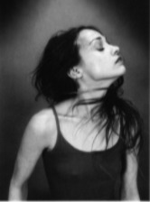
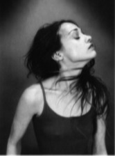
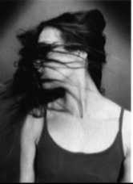
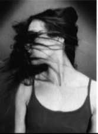
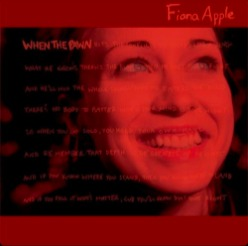

About
Fiona Apple McAfee Maggart (born September 13,1977) is an American singer-songwriter, pianist an d record producer Classically trainer on piano as a child,Apple begane compasing her own songs when she was eight years old Her debut album, Tidal, wirtten when Apple was released in 1996 and received a Grammy Award for Best Female Rock Vocal Perfomance for the single "Criminal" She follwed with wehen Pawn..(1999). produced by Jon Brion, whech was also critecally and commercially successulfl and went cetified platinum.
For her third album. Extrodinay Machine(2005). Apple again collaborated with Brion. and began recording the album in 2002. However Apple was reportedly unhappy with the production and pted not to release the record. leading fans to erroneously prtest Epic Records. Beleiving that the label was withholding its release The album was eventually re-produced without Brion and released in October 2005 to critecal acclaim. She relaease her fourth studio album. The Idler Whell..., in 2012. which was followed by an extensive tour of the USA . The album received universal praise. To learn more about Fiona Apple. see her page at Wikipedia
 

 

Tidal

When the Pawn...
Extrodinay Machine